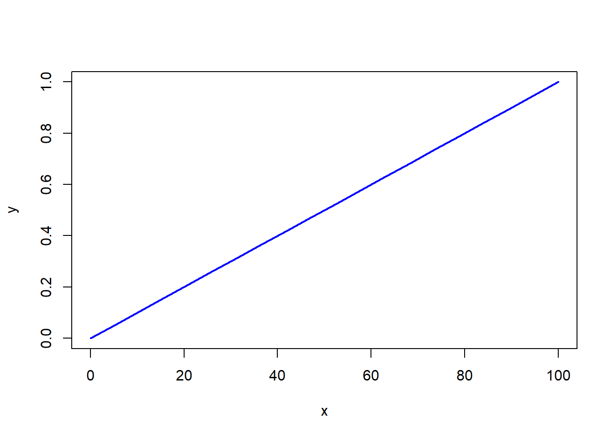
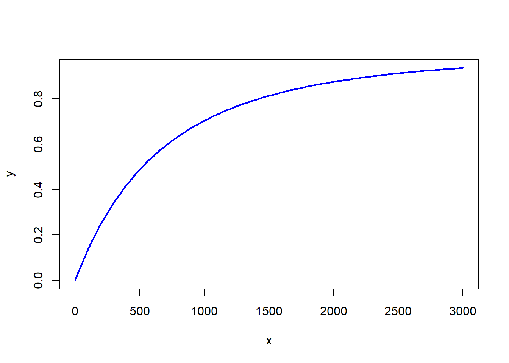
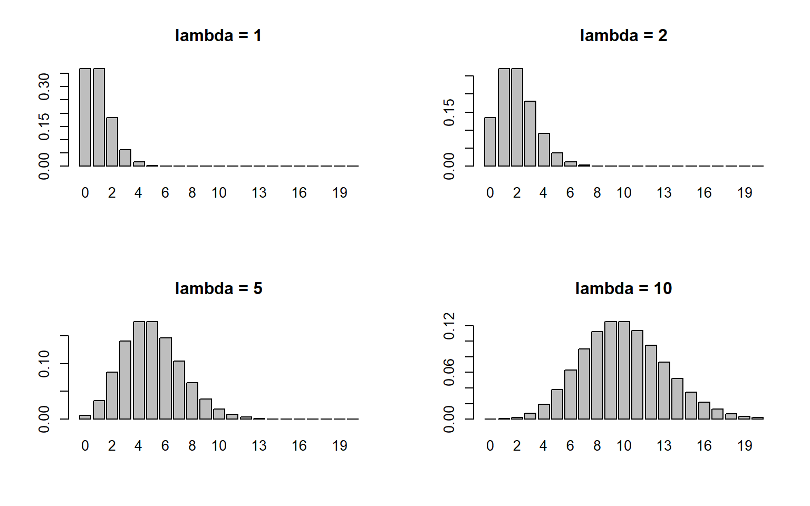
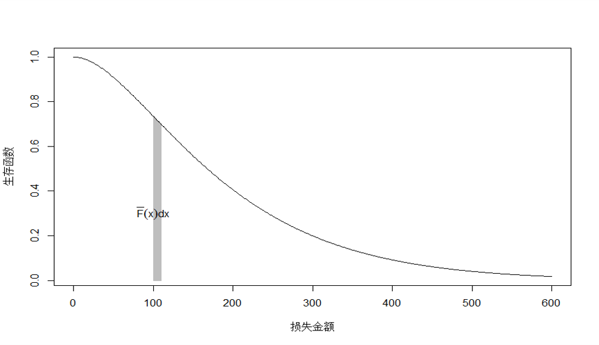
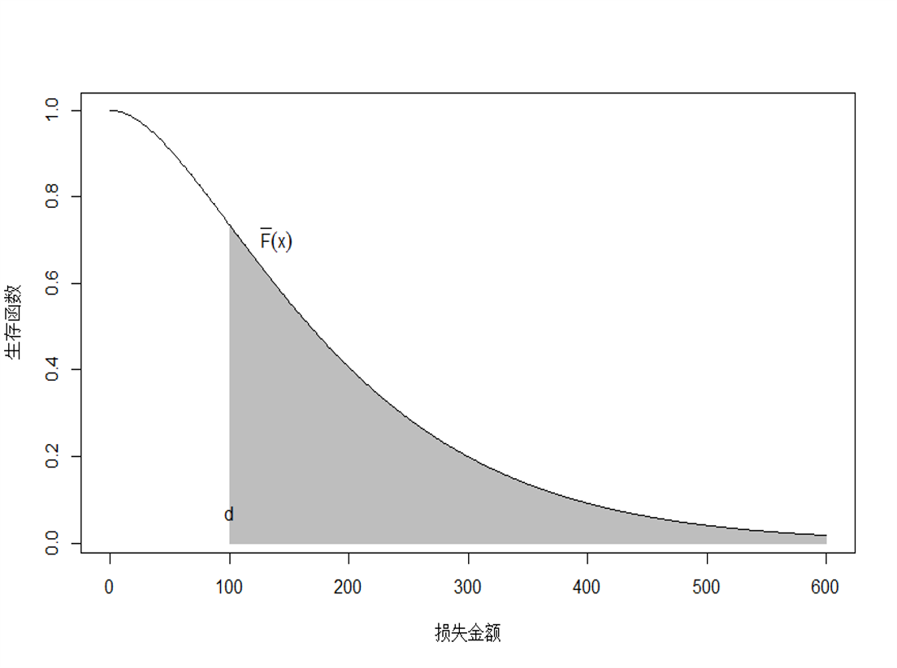
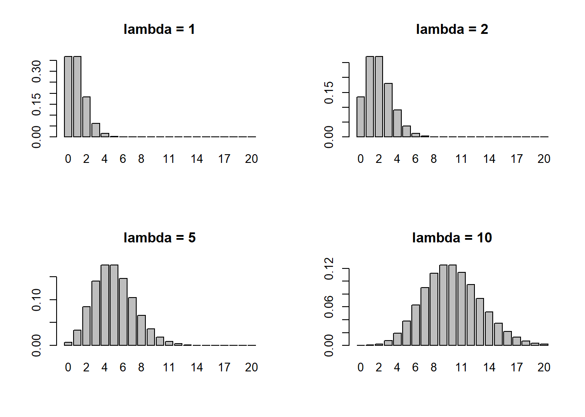
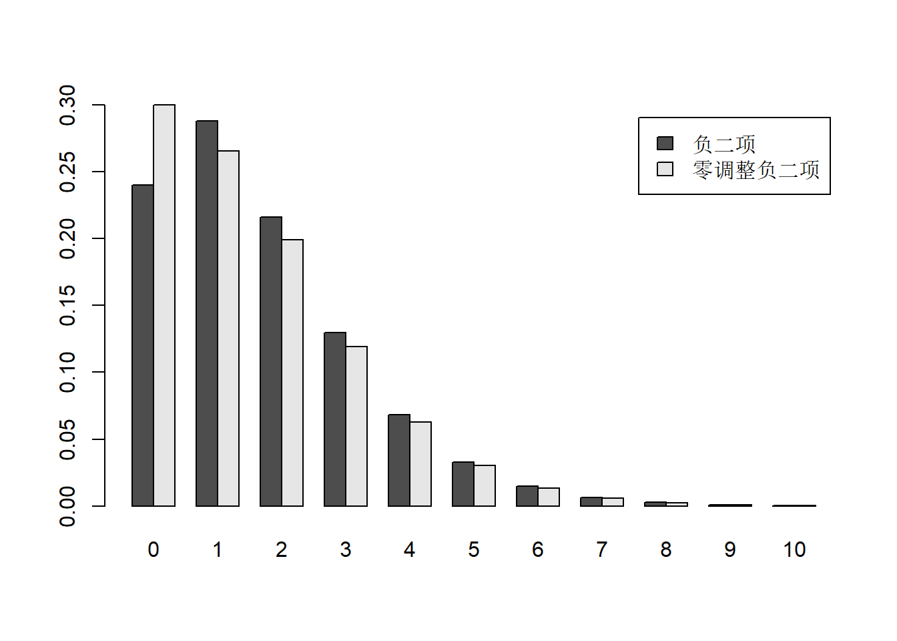

Chapter 3 风险度量
3.1 随机变量的基础知识
在非寿险精算中，风险可以理解为保险损失的不确定性，通常用随机变量来表示。风险可以是：
保险事故发生与否的不确定性
保险事故发生的时间的不确定性
保险事故发生的地点的不确定性
保险事故造成的损失金额的不确定性。
随机变量是指取值依赖于随机现象的观察结果的变量，取值是随机的，取值特征通过概率分布来描述。一般用大写的英文字母表示。随机变量可以表示为：
连续型随机变量。其取值通常布满一个区间，如保险事故造成的损失金额 \(X\) 的取值范围为 \((0,+\infty)\)。
离散型随机变量。其取值为有限个或可列个值，如保险事故发生的次数 \(N\) 的取值范围为 \(0, 1, 2, 3, ...\)。保险事故是否发生损失可以表示为取值为 0 和 1 的离散型变量 \(I=0,1\)。
半连续型随机变量。其取值通常为连续型和离散型的结合，如保险事故造成的累积损失 \(S\)，其取值范围为 \([0, +\infty\)，其中 \(S=0\) 表示保险事故没有造成损失，\(S>0\) 表示保险事故造成了多大的损失。
3.2 分布函数和生存函数
- 连续型随机变量 \(X\) 的累积分布函数 (Cumulative Distribution Function, cdf) 表示为 \[F_{X}(x)=\Pr(X\le X)\]
\[\begin{equation*} F_1(x) = \begin{cases} 0 &\quad x <0,\\ 0.01x & \quad 0 \le x < 100,\\ 1, & \quad x\ge 100. \end{cases} \end{equation*}\]例: 运用 R 软件画出下面两种分布函数图。
# 定义分布函数
F1.f <- function(x) {
if (x < 0){
out <- 0
} else if(x < 100 & x >= 0){
out <- 0.01*x
} else if (x >= 100){
out <- 1
}
return(out)
}
F1.f <- Vectorize(F1.f) # 将函数向量化，允许函数输入向量，输出向量
x <- seq(from = 0, to = 100, length.out = 20) # 画图横轴数据
y <- F1.f(x) # 画图纵轴数据
plot(x, y, type = 'l', col = "blue", lwd = 2)
\[ \begin{equation} F_2(x) = \begin{cases} 0 &\quad x <0,\\ 1 - \left(\frac{2000}{x + 2000}\right)^3, & \quad x\ge 0, \end{cases} \end{equation} \]
F2.f <- function(x) {
if (x < 0){
out <- 0
} else if (x >= 0){
out <- 1 - (2000/(2000 + x))^3
}
return(out)
}
F2.f <- Vectorize(F2.f)
x <- seq(from = 0, to = 3000, length.out = 100)
y <- F2.f(x)
plot(x, y, type = 'l', col = "blue", lwd = 2)
随机变量的生存函数 (Survival Function) 定义为： \[ S_{X}(x)=\Pr(X>x)=1-F_{X}(x) \] 其中，生存函数表示随机变量 \(X\) 大于 \(x\) 的概率。
若随机变量是连续的，其密度函数和生存函数存在下述关系： \[S_{X}(x)=\int_{0}^\infty f_{X}(x)dx\]
\[f(x)=-\frac{dS(x)}{dx}\]
例：运用 R 软件画出 F2.f 对应的密度函数图。
f2.f <- function(x){
if (x > 0){
out <- 3*(2000)^3/(x + 2000)^4
} else out <- 0
return(out)
}
f2.f <- Vectorize(f2.f)
x <- seq(from = 0.001, to = 3000, length.out = 100)
y <- f2.f(x)
plot(x, y, type = 'l', col = "blue", lwd = 2)
3.3 概率母函数/矩母函数
随机变量的概率母函数或矩母函数与其分布函数存在一一对应的关系，同样可以描述随机变量的随机特征。
离散型随机变量： 概率母函数 (Probability Generating Function, pgf)
连续性随机变量： 矩母函数 (Moment Generating Function, mgf)
概率母函数或矩母函数可以得到随机变量各阶矩。
定义：离散随机变量 \(N\) 的（概率）母函数表示为： \[ P_N(t)=E(t^N)=\sum_{k=0}^{\infty}t^kP(N=k) \]
推论：运用概率母函数可以表示出随机变量 \(N=k\) 的概率，即 \(\Pr(N=k)\) 为概率母函数的 \(k\) 阶偏导在 \(0\) 点出的取值。例如: \[ P(N=1)=\frac{P_N^{(1)}(0)}{1!}\] \[P(N=k)=\frac{P_N^{(k)}(0)}{k!} \] 其中，\(P_N^{(k)}(\cdot)\) 表示概率母函数的 \(k\) 阶偏导，\(k!=\Gamma(k)\) 表示 \(k\) 阶乘。
定义：连续型随机变量 \(X\) 的矩母函数表示为 \[M_X(t)=E(e^{tX})=\int_{-\infty}^{\infty}e^{tX}f(x)dx\]
推论：运用矩母函数可以得到多个独立随机变量之和的分布函数。例如，假设\(S=X_1+X_2+...+X_n=\sum_{i=1}^{n}X_i\)，则随机变量 \(S\) 的矩母函数表示为： \[M_s(t)=M_{X_1}(t)M_{X_2}(t)...M_{X_n}(t)\] 其中，\(M_{X_j}(t)\) 表示 \(X_j\) 的矩母函数在 \(t\) 的取值。
3.4 截断和删失
保险中的损失通常指被保险人发生的损失
保险中的索赔通常指保险人给被保险人的赔款
由于不同的保险产品通常存在免赔额和赔偿限额的情况，使得保险的损失和索赔的随机性通常是不一致的
这种不一致性通常运用截断和删失的方法进行处理。
假设随机变量 \(X\) 表示原始的损失，其数学期望可以表示为： \[\mathbb{E}(X)=\int_{0}^{\infty }{S(x)dx}\]

3.4.1 左截断（left truncated）和平移（shifted）
定义：给定常数 \(d\)，且满足 \(\Pr(X > d) > 0\) ，对随机变量 \(X\) 进行左截断和平移变换之后得到新的随机变量 \(Y^p\)，具体表示为： \[ Y^p = X - d|X>d = \begin{cases} \text{NA}, \quad X\le d \\ X - d, \quad X> d \end{cases} \] 其中，\(Y^p\) 也称之为 超额损失变量 （excess loss variable）。
超额损失变量也称之为左截断平移变量：
\(Y^p\) 是 \(X\) 在 \(d\) 处左截断得到的，原因在于任意 \(X\) 小于 \(d\) 的值都是无法观测到
\(Y^p\) 左截断之后向左平移得到的，因此在截断基础上减少了 \(d\)
定义：随机变量 \(Y^p\) 的数学期望称之为 平均超额损失函数： \[ e_X(d):=\mathbb{E}(Y^p)=\mathbb{E}(X-d|X>d) \]
当 \(X\) 表示保险事故造成的损失金额，\(d\)表示保险免赔额时，则平均超额损失表示已发生的超过免赔额 \(d\) 的期望索赔金额
当 \(X\) 是死亡年龄，平均超额损失表示为已知某人在年龄 \(d\) 存活的情况下的期望预期寿命
定义：超额损失变量的 \(k\) 阶矩表示为： \[ e_{X}^k(d) =\frac{\int_{d}^{\infty}(x-d)^kf(x)dx}{1-F(d)}, \] 其中，当 \(k=1\) 时，平均超额损失函数表示为 \[ {{e}_{X}}(d)=\mathbb{E}\left( X-d|X>d \right)=\frac{\int_{d}^{\infty }{{S}(x)dx}}{S(d)}. \]
证明： \[ \begin{align*} {{e}_{X}}(d)&=\frac{\int_{d}^{\infty }{(x-d)f(x)dx}}{1-F(d)}\\ &=\frac{-(x-d)S(x)|_{d}^{\infty }+\int_{d}^{\infty }{S(x)dx}}{S(d)}\\ &=\frac{\int_{d}^{\infty }{S(x)dx}}{S(d)}. \end{align*} \] 下面证明 \((x-d)S(x)|_{d}^{\infty }=0\) \[ \begin{align*} & \underset{x\to \infty }{\mathop{\lim }}\,xS(x)=\underset{x\to \infty }{\mathop{\lim }}\,x\int\limits_{x}^{\infty }{f(t)dt} \\ & =\underset{x\to \infty }{\mathop{\lim }}\,\int\limits_{x}^{\infty }{xf(t)dt} \\ & \le \underset{x\to \infty }{\mathop{\lim }}\,\int\limits_{x}^{\infty }{tf(t)dt} \\ & =\underset{x\to \infty }{\mathop{\lim }}\,\left[ \int\limits_{0}^{\infty }{tf(t)dt}-\int\limits_{0}^{x}{tf(t)dt} \right]=0 \end{align*} \]
3.4.2 左删失（left censored）和平移（shifted）
左删失平移 变量定义为： \[ {{Y}^{L}}={{\left( X-d \right)}_{+}}= \begin{cases} & 0,\quad \quad \quad X\le d \\ & X-d,\quad X>d \\ \end{cases} \]
左删失表示随机变量 \(X<d\) 的取值都替换为 \(d\)
平移表示将左删失的变量向左进行平移变化，使得左删失变量减去 \(d\)
\({Y}^{L}\) 的 \(k\)阶矩表示为： \[ \mathbb{E}[(X-d)_{+}^k]={\int_{d}^{\infty}(x-d)^kf(x)dx} \]
\(Y^L\) 和 \(Y^P\) 的比较：
假设 \(X\) 表示损失，则 \(Y^L\) 和 \(Y^P\) 都表示赔款
\(Y^L\) 是含零赔款（per loss），即当保险事故造成的损失没有产生赔款的时候， \(Y^L=0\)
\(Y^P\) 是非零赔款（per payment），即当保险事故造成的损失没有产生赔款的时候， \(\Pr(Y^p=0)=0\)
数学期望存在下述关系：
\[\mathbb{E}[Y^L]=\mathbb{E}[Y^p][1-F_X(d)]=\int_{d}^{\infty}S(x)dx\] 
3.4.3 右删失（right censored）
定义：右删失变量表示为： \[ Y=X\wedge u=\min (X,u)=\begin{cases} & X,\ \ \ X<u \\ & u,\ \ \ \ X\ge u \\ \end{cases} \] 其中，\(Y\) 也被称之为有限损失 (limited loss variable)。
- 右删失表示随机变量 \(X>u\) 的所有取值都用 \(u\) 代替
定义：\(Y\) 的数学期望 \(E(X\wedge u)\) 称之为有限期望 (limited expected value)，具体表示为： \[ \begin{align*} E(X\wedge u)& =\int_{0}^{u}{xf(x)dx}+u\cdot S(u) \\ & =-xS(x)\left| _{0}^{u} \right.+\int_{0}^{u}{S(x)dx}+uS(u) \\ & =\int_{0}^{u}{S(x)dx} \end{align*} \]
例： 假设损失金额服从下述概率分布： \[ f(x)=\frac{4(100-x)^3}{100^4},\quad\quad 0<x\le 100. \] 且保单限额为 60。 请计算含零赔款的期望值 \(\mathbb{E}(X \wedge 60)\)。
解：
\[S(x)=\left(\frac{100-x}{100}\right)^4\] \[ \mathbb{E}(X \wedge 60) =\int_{0}^{60}\left(\frac{100-x}{100}\right)^4dx = 19.7952 \] 例： 一个损失随机变量\(X\)有如下特征：
| \(x\) | \(F(x)\) | \(\mathbb{E}(X\wedge x)\) |
|---|---|---|
| 0 | 0.0 | 0 |
| 100 | 0.2 | 91 |
| 200 | 0.6 | 153 |
| 1000 | 1.0 | 331 |
请计算含有免赔额100的平均超额损失。
解： \[由于F(1000) = 1，E[X \wedge 1000] = E[X]。\]
\[E[X] = E[X \wedge 100 ] + e(100)(1 - F(100))\]
\[331 = 91 + e(100)(1 - 0.2)\] \[e(100)=\frac{240}{0.8}=300\]
3.4.4 R代码
假设随机变量 \(X\sim \text{Gamma}(\alpha = 2, \theta = 100)\)，其中期望为 200。
请用 R 软件进行绘图：
请画出 \(\mathbb{E}(Y^L)\) 和 \(\mathbb{E}(Y^p)\) 随着 \(d\) 增加而变化的曲线图
请画出有限期望\(\mathbb{E}(X\wedge u)\) 随着 \(u\) 变化而变化的曲线图
若假设 \(X\sim \text{Pareto}(\alpha=2, \theta=200)\) 和 \(X\sim \text{exp}(\theta = 1/200)\)。
请画出 \(\mathbb{E}(Y^L)\) 和 \(\mathbb{E}(Y^p)\) 随着 \(d\) 增加而变化的曲线图
请画出 limited expected value \(\mathbb{E}(X\wedge u)\) 随着 \(u\) 变化而变化的曲线图
注意： 上述三个分布的均值相等，均为 200。 指数分布: \(e_X(d)=\frac{1}{\theta}\) 帕累托分布: \(e_X(d)=\frac{\theta}{\alpha-1}\)
# 指数分布的生存函数
S <- function(x) exp(-200*x)
# 指数分布的平均超额函数 ex1
ex1 <- NULL
d1 <- seq(0.1, 2, 0.1) # 免赔额
for(i in 1:length(d1)){
ex1[i] <- integrate(S, d1[i], Inf)$value/S(d1[i])
}
# 帕累托分布的生存函数
alpha <- 5
theta <- 100
S <- function(x) {
(theta/(x + theta))^alpha
}
# 帕累托分布的平均超额函数 ex2
ex2 <- NULL
d2 <- seq(0.1, 500, 1) # 免赔额
for(i in 1:length(d2)){
ex2[i] <- integrate(S, d2[i], Inf)$value/S(d2[i])
}
# 绘图
par(mfrow = c(1, 2))
plot(d1, ex1, type = 'l', ylab = 'mean excess function (1)', ylim = c(0,0.01))
plot(d2, ex2, type = 'l', ylab = 'mean excess function (2)')3.5 常用的损失分布
3.5.1 损失次数分布
在一段时间期间内，对损失发生的次数进行分析和预测是是精算和风险管理的第一步。在非寿险精算中，通常用用计数随机变量来描述一段时间内发生的损失次数。计数随机变量是离散型随机变量的一种，只在 0,1,2, 3,4…正整数值域上取值。
- \((a,b,0)\)分布类
若满足下述递推关系： \[p_k=(a+\frac{b}{k})p_{k-1}\] \(k=1,2,3,...\),其中\(a\)和\(b\)为常数。 对于该类分布，只要已知\(a,b\)和\(p_0\)，就可以通过上式确定整个概率分布模型。
可以证明，\((a,b,0)\)分布类仅包括泊松分布（Poisson）、二项分布（Binomial Distribution）和负二项分布（Negative Binomial distribution）。
(1)泊松分布（Poisson）
概率密度函数： \[ {{p}_{k}}=\frac{{{e}^{-\lambda }}{{\lambda }^{k}}}{k!},\quad k=0,1,2.... \] 概率母函数： \[ P(z)=e^{(\lambda(z-1))},\quad \lambda>0. \] 均值和方差可以通过母函数求得： \[ \begin{align*} \mathbb{E}(N)&=\lambda \\ \text{Var}(N)&=\lambda \end{align*} \] 其中，泊松分布的方差和均值相等，都可以表示为\(\lambda\) 。另外，若干个独立的泊松分布之和仍然服从泊松分布。同理，泊松分布可以分解为若干个泊松分布之和。
# density function 概率函数
#dpois(x, lambda, log = FALSE) # lambda 表示均值, log = TRUE 表示输出log(f(x))
# distribution function 分布函数
#ppois(q, lambda, lower.tail = TRUE, log.p = FALSE)
# quantile function 分布函数的逆函数（分位数函数）
#qpois(p, lambda, lower.tail = TRUE, log.p = FALSE)
# 泊松分布的随机数 - 模拟
#rpois(n, lambda = 10) # 模拟 n 个服从期望为10的泊松分布
# 画图- 不同lambda的泊松分布的概率函数图
par(mfrow = c(2,2))
lambda.po <- c(1, 2, 5, 10) # lambda 取值为 1,2,5,10
x0 <- seq(0, 20) # x 取值为 0-25 的整数
for(lambda.po in c(1, 2, 5, 10)){
barplot(dpois(x0, lambda.po), names.arg = x0, main = paste('lambda = ', lambda.po, sep = ''))
}
例：假设某险种的索赔次数服从参数\(\lambda=2\)的泊松分布，如果将保险责任减少一项（假设此项责任的索赔次数占总索赔次数的10％），那么剩余责任的索赔次数仍将服从泊松分布，泊松参数成为\(\lambda=0.9*2=1.8\)。
例：假设索赔次数N服从参数为 的泊松分布，请计算： (1) 索赔次数等于3的概率\(P(N=3)\) (2) 索赔次数小于等于4的概率\(P(N\leq4)\) (3) 索赔次数大于等于3小于等于5的概率\(P(3\leq N \leq 5)\)
解：
## 索赔次数等于3的概率
dpois(3, lambda = 2)## [1] 0.180447## 索赔次数小于等于4的概率为
ppois(4, lambda = 2)## [1] 0.947347## 索赔次数大于等于3小于等于5的概率
ppois(5, 2) - ppois(2, 2)## [1] 0.30676(2)负二项分布（Negative Binomial distribution）
概率密度函数： \[ {{p}_{k}}=\frac{\Gamma (k+r)}{\Gamma (r)\Gamma (k+1)}{{\left( \frac{1}{1+\beta } \right)}^{r}}{{\left( \frac{\beta }{1+\beta } \right)}^{k}}, \quad k=0,1,2,.... \]
不难计算得出其概率母函数，以及均值、方差为：
\[ P(z)={{\left[ 1-\beta (z-1) \right]}^{-r}} \] \[ \begin{align*} \mathbb{E}(X)&=r\beta\\ \text{Var}(X)&=r\beta(1+\beta) \end{align*} \] 证明：
\[ \begin{align*} P(z)&=\sum\limits_{k=0}^{\infty }{{{p}_{k}}{{z}^{k}}}=\sum\limits_{k=0}^{\infty }{\left[ \frac{\Gamma (k+r)}{\Gamma (r)\Gamma (k+1)}{{\left( \frac{1}{1+\beta } \right)}^{r}}{{\left( \frac{\beta }{1+\beta } \right)}^{k}} \right]{{z}^{k}}} \\ & =\sum\limits_{k=0}^{\infty }{\left[ \frac{\Gamma (k+r)}{\Gamma (r)\Gamma (k+1)}{{\left( \frac{1+\beta -z\beta }{1+\beta } \right)}^{r}}{{\left( \frac{z\beta }{1+\beta } \right)}^{k}} \right]}{{\left( 1+\beta -z\beta \right)}^{-r}} \\ & ={{\left( 1+\beta -z\beta \right)}^{-r}} \end{align*} \]
注：几何分布是负二项分布在\(r=1\)时的特殊情况。
使\(p=\frac{1}{1+\beta}\),我们可以得到负二项分布密度函数的另一种形式： \[ {{p}_{k}}=\frac{\Gamma (k+r)}{\Gamma (r)\Gamma (k+1)}{{p}^{r}}{{\left( 1-p \right)}^{k}} \]
其中，负二项分布的方差大于均值，通常可以用来描述具有过离散数据特征的损失次数。下图显示了参数\(r\)在不同取值条件下负二项分布的概率分布图。可以发现，当负二项分布均值越大时，分布形状约趋近于正态分布。对应的代码如下：
# 负二项分布的概率函数
r0 <- c(1, 1, 2, 2)
p0 <- c(0.3,0.5, 0.3, 0.5)
x0 <- seq(0, 20)
ylim0 <- list(c(0,0.5),
c(0,0.5),
c(0,0.5),
c(0,0.5)) # 上下界
par(mfrow = c(2, 2) )
for (i in 1:length(p0)){
fpo <- dnbinom(x0, size = r0[i], prob = p0[i], log = FALSE)
barplot(fpo,
main = paste0('r = ', r0[i], ', ','p = ', p0[i]),
names.arg = x0, ylim = ylim0[[i]]
)
}使\(r\to\infty\)且\(\beta\to 0\) ,令\(r\beta=\lambda\)是一个常数，我们可以得到
\[ \begin{align*} \mathbb{E}(X)&=r\beta \to \lambda\\ \text{Var}(X)&=r\beta(1+\beta) \to \lambda \end{align*} \] 负二项分布的极限分布是泊松分布。
(3)二项分布（Binomial Distribution）
个体风险发生索赔的概率为\(q\), 不发生索赔的概率为\(1-q\), 则索赔次数分布的母函数为 \[ P\left( z \right)=\mathbb{E}\left( {{z}^{N}} \right)=\left( 1-q \right){{z}^{0}}+q{{z}^{1}}=1-q+qz=1+q\left( z-1 \right) \] 对\(m\)个独立同分布的个体风险，其索赔次数分布的母函数为 \[ P\left( z \right)=[1+q\left( z-1 \right)]^m. \] 这\(m\)个风险发生\(k\)次索赔的概率为二项分布 \[ {{p}_{k}}=\left(^m _k \right){{q}^{k}}{{(1-q)}^{m-k}}\quad \quad k=0,1,2,...,m. \] 二项分布的均值和方差为\(\mathbb{E}(X)=mq, \quad \text{Var}(X)=mq(1-q)\)
需要注意的是，二项分布的取值存在一个最大值\(m\)。下图显示二项分布的均值越大，分布形态越对称。
# ==============================================================
# 二项分布
# ==============================================================
m0 <- c(1, 5, 10, 10, 10, 10)
q0 <- c(0.3, 0.3, 0.3, 0.1, 0.2, 0.3)
x0 <- seq(0, 10)
par(mfrow = c(2, 3) )
for (i in 1:length(m0)){
fpo <- dbinom(x0, size = m0[i], prob = q0[i], log = FALSE)
barplot(fpo,
main = paste0('m = ', m0[i], ', ',
'q = ', q0[i]),
names.arg = x0)
}由二项分布的参数\(m>0\)，二项分布的均值大于方差，主要用于描述具有欠离散数据特征的损失次数，这是与泊松分布和负二项分布的根本差别。
- \((a,b,1)\)分布类
\((a,b,1)\)分布类包含两个子类： 零截断分布 (zero-truncated distribution) 零调整分布 (zero-modified distribution) 对于零截断分布，发生k次损失的概率用\(p_k^T\)表示，其中\(p_0^T=0\) 对于零调整分布，发生k次损失的概率用\(p_k^M\)表示，其中\(p_0^M\)表示可以是任意概率值。
\((a,b,1)\)分布类满足下述递推关系： \[p_k=(a+\frac{b}{k})p_{k-1}\] \(k=2,3,...\),上述递推关系与\((a,b,0)\)分布类的递推关系完全相同,只是\((a,b,1)\)分布类的递推关系是从 \(p_1\)开始，而\((a,b,1)\)分布类的递推关系是从\(p_0\)开始。
例： 零截断负二项分布的计算
## 负二项分布的概率
x = 0:10
p = dnbinom(x,4,0.7)
round(p,3)## [1] 0.240 0.288 0.216 0.130 0.068 0.033 0.015 0.006 0.003 0.001 0.000## 零截断负二项分布的概率
p0 = p[1] ##零点的概率
pt1 = p[2:11]/(1-p0) ##其它点上的概率
pt = c(0, pt1)
round(pt,3)## [1] 0.000 0.379 0.284 0.171 0.090 0.043 0.019 0.008 0.003 0.001 0.001## 绘图比较负二项和零截断负二项的概率
com = rbind(负二项 = p, 零截断负二项 = pt)
barplot(com,beside=TRUE,names.arg=0:10,legend.text=TRUE)
例： 零调整负二项分布的计算
## 负二项分布的概率
x = 0:10
p = dnbinom(x, 4, 0.7)
round(p,3)## [1] 0.240 0.288 0.216 0.130 0.068 0.033 0.015 0.006 0.003 0.001 0.000## 零调整负二项分布的概率
p0 = 0.3 ##调整零点的概率
pm = (1-p0)*p[2:11]/(1-p[1]) ##其它点上的概率
pm = c(p0,pm)
round(pm, 3)## [1] 0.300 0.265 0.199 0.119 0.063 0.030 0.014 0.006 0.002 0.001 0.000## 绘图
com = rbind(负二项 = p, 零调整负二项 = pm)
barplot(com, beside = TRUE, names.arg = 0:10,legend.text=TRUE)
3.5.2 损失金额分布
对保险损失金额进行分析和预测，是精算师和风险管理者的重要工作。通常情况下，保险损失金额具有不对称、定义域非负、尾部较厚的特点，像正态分布等高斯类的分布不适于拟合损失金额。由于损失金额具有较强的自然偏性，在实际运用中，指数分布 （Exponential）、伽马分布（Gamma）、威布尔分布（Weibull）、帕累托分布（Pareto）和对数正态分布（Log-normal）等等通常是精算师的首选。这一节将主要介绍几种常见的损失分布，以及分布函数、概率密度函数、矩母函数等分布性质。
(1)指数分布 （Exponential）
指数分布的概率密度函数和累积分布函数为: \[ f(x)=\frac{1}{\theta}\exp\left({-\frac{1}{\theta}x}\right),\quad x \ge 0 \]
或者 \[ f(x)=\lambda\exp\left({-\lambda x}\right),\quad x \ge 0 \] 指数分布的期望、方差分别为 \[E(X)=\theta\] \[Var(X)=\theta^2\] 同时，指数分布具有无记忆性，即 \[P(X>x+u|X>u)=P(X>x)\]
下图显示了指数分布的比率参数取值不同情况下的密度函数图。指数分布的缺点是其概率密度函数是单调递减的，这在很多情况下，并不适于实际的需要。对应代码如下。
# ==========================================
# 指数分布
# ===========================================
theta <- c(0.5, 1, 2)
x0 <- seq(0.001, 10, length.out = 100)
par(mfrow = c(1, 1) )
f1 <- dexp(x0, rate = 1/theta[1], log = FALSE)
f2 <- dexp(x0, rate = 1/theta[2], log = FALSE)
f3 <- dexp(x0, rate = 1/theta[3], log = FALSE)
matplot(x0, cbind(f1, f2, f3), type = 'l', lty = 1:3, lwd = 2)
legend('topright',
legend = c('theta = 0.5', 'theta = 1', 'theta = 2'),
lty = c(1,2,3),
bty = "n", lwd = 2, col = 1:3)(2)伽马分布（Gamma）
伽马分布的概率密度函数为 \[ f(x)=\frac{{{\theta }^{-\alpha }}}{\Gamma \text{(}\alpha )}{{x}^{\alpha -1}}{{e}^{-\frac{1}{\theta} x}}. \] 其中 \(\alpha\) 是 形状参数，\(\theta\) 是 尺度参数。另外，伽马分布还可以用形状参数\(\alpha\)和比率参数\(\beta=1/\theta\)来表示，即比率参数表示为尺度参数的倒数。
伽马分布的期望、方差分别为 \[E(X)=\alpha/\beta\] \[Var(X)=\alpha/\beta^2\]
伽马分布的另一种参数形式：令\(\mu=\alpha/\beta,\phi=1/\alpha\),则均值和方差分别为\(\mu\)和\(\phi\mu^2\)。
若两个随机变量\(X_1\)和\(X_2\)都服从形状参数\(\alpha_1\)和\(\alpha_2\) ，比率参数都为\(\beta\)的伽马分布，即\(X_1\sim GA(\alpha_1,\beta)\)，\(X_2\sim GA(\alpha_2,\beta)\) ，那么随机变量之和\(X_1+X_2\) 服从形状参数为\(\alpha_1+\alpha_2\)，比率参数为\(\beta\) 的伽马分布，即\[X_1+X_2\sim GA(\alpha_1+\alpha_2,\beta)\] 。这就是伽马分布的可加性。
当形状参数\(\alpha=1\)时，伽马分布可以退化为指数分布，即指数分布是伽马分布的特例。当\(\alpha=n/2\)和\(\beta=1/2\) 时，伽马分布可以退化为卡方分布，其中卡方分布的自由度为\(n/2\)。
下图显示了伽马分布的形状参数和比率参数在不同取值情况下的密度函数图。对应的R代码如下。
# ==========================================
# 伽马分布
# ===========================================
par(mfrow = c(1, 2) )
# 固定形状参数
alpha <- 2 # 形状参数
theta <- c(0.5, 1, 2) # 比率参数，尺度参数为 1/theta
x0 <- seq(0.001, 15, length.out = 100)
f1 <- dgamma(x0, shape = alpha, rate = theta[1]) #
f2 <- dgamma(x0, shape = alpha, rate = theta[2])
f3 <- dgamma(x0, shape = alpha, rate = theta[3])
matplot(x0, cbind(f1, f2, f3),ylim = c(0,0.8), main = '', type = 'l', lty = 1:3, lwd = 2, ylab = '密度函数')
legend('topright', legend = c('alpha = 2, theta = 0.5',
'alpha = 2, theta = 1',
'alpha = 2, theta = 2'),
lty = c(1,2,3), bty = "n", lwd = 2, col = 1:3)
# 固定比率参数
alpha <- c(1,2,3)
theta <- 0.5
x0 <- seq(0.001, 15, length.out = 100)
f1 <- dgamma(x0, shape = alpha[1], rate = theta)
f2 <- dgamma(x0, shape = alpha[2], rate = theta)
f3 <- dgamma(x0, shape = alpha[3], rate = theta)
matplot(x0, cbind(f1, f2, f3),ylim = c(0,0.8), main = '', type = 'l', lty = 1:3, lwd = 2, ylab = '密度函数')
legend('topright',legend = c('alpha = 1, theta = 0.5',
'alpha = 2, theta = 0.5',
'alpha = 3, theta = 0.5'),
lty = c(1,2,3), bty = "n", lwd = 2, col = 1:3)(3)帕累托分布（Pareto）
当我们提到帕累托分布，一般指双参数帕累托。
\[ \begin{align*} & {{F}_{X}}(x)=1-{{\left( \frac{\theta }{x+\theta } \right)}^{\alpha }}\ \ \ \ 0<x<\infty \\ & \\ & {{f}_{X}}(x)=\frac{\alpha {{\theta }^{\alpha }}}{{{(x+\theta )}^{\alpha +1}}} \\ & \\ & \mathbb{E}(X)=\frac{\theta }{\alpha -1},\ \ \ \ \ \ \text{Var}(X)=\frac{\alpha {{\theta }^{2}}}{{{(\alpha -1)}^{2}}(\alpha -2)}. \end{align*} \]
library(actuar)
# shape = alpha, scale = theta
# mean = 50
alpha <- c(0.5,2,5)
theta <- c(5,50,200)
x0 <- seq(0.001, 100, length.out = 100)
f1 <- dpareto(x0, shape = alpha[1], scale = theta[1])
f2 <- dpareto(x0, shape = alpha[2], scale = theta[2])
f3 <- dpareto(x0, shape = alpha[3], scale = theta[3])
matplot(x0, cbind(f1, f2, f3), main = '', type = 'l',
lty = 1:3, lwd = 2, ylab = 'pdf', ylim = c(0,0.05))
legend('topright', legend = c('alpha = 0.5, theta = 5',
'alpha = 2, theta = 50',
'alpha = 5, theta = 200'),
lty = c(1,2,3), bty = "n", lwd = 2, col = 1:3)单参数帕累托的概率密度函数为： \[ \begin{align*} f(x)&=\frac{\alpha\theta^\alpha}{x^{\alpha+1}},\quad x>\theta,\\ F(x)&=1-\left(\frac{\theta}{x}\right)^\alpha, \end{align*} \] 其中\(\alpha\)是真实参数而\(\theta\)是预先给定的。
\(k\)阶矩为：
\[ \mathbb{E}(X^k)=\frac{\alpha \theta^k}{\alpha-k},\quad k < \alpha. \]
library(actuar)
# shape = alpha, scale = theta
# mean = 50
alpha <- c(0.5,2,5)
theta <- c(20,50,80)
x0 <- seq(0.001, 200, length.out = 100)
f1 <- dpareto1(x0, shape = alpha[1], min = theta[1])
f2 <- dpareto1(x0, shape = alpha[2], min = theta[2])
f3 <- dpareto1(x0, shape = alpha[3], min = theta[3])
matplot(x0, cbind(f1, f2, f3), main = '', type = 'l',
lty = 1:3, lwd = 2, ylab = 'pdf', ylim = c(0,0.08))
legend('topright', legend = c('alpha = 0.5, theta = 5',
'alpha = 2, theta = 50',
'alpha = 5, theta = 200'),
lty = c(1,2,3), bty = "n", lwd = 2, col = 1:3)(4)对数正态分布（Log-normal）
对数正态分布的概率密度函数和分布函数为 \[ f(x)=\frac{1}{x\sigma}\phi\left(\frac{\ln x - \mu}{\sigma} \right) =\frac{1}{x\sigma\sqrt{2\pi}}\exp\left[ -\frac{1}{2}\left(\frac{\ln x - \mu}{\sigma} \right)^2 \right] \] 对数正态分布的均值和方差分别为
\[ E(X)=\exp\left(\mu + \frac{1}{2}\sigma^2\right) \] \[ Var(X)=(e^{\sigma^2}-1)e^{2\mu+\sigma^2} \] 假设随机变量服从参数为\((\mu,\sigma)\)的正态分布\(X\sim N(\mu,\sigma^2)\) ，那么随机变量\(Y=e^X\)则服从参数为\((\mu,\sigma)\) 的对数正态分布。需要注意的是，对数正态分布的参数\(\mu\)和\(\sigma\) 并不是它的均值和方差。
对数正态分布常用在损失额度的建模中。从下图可以看到：它的概率密度函数是右偏、厚尾的，因而可以很好地拟合许多损失分布的情形。当\(\sigma\)很小的时候，对数正态分布与正态分布非常相似。
# ===========================================
# 对数正态分布
# ===========================================
par(mfrow = c(1, 2) )
# 固定 mu
mu <- 2
sigma <- c(0.5, 1, 2)
x0 <- seq(0.001, 15, length.out = 100)
f1 <- dlnorm(x0, meanlog = mu, sdlog = sigma[1])
f2 <- dlnorm(x0, meanlog = mu, sdlog = sigma[2])
f3 <- dlnorm(x0, meanlog = mu, sdlog = sigma[3])
matplot(x0, cbind(f1, f2, f3), main = '', type = 'l', lty = 1:3, lwd = 2, ylab = '密度函数')
legend('topright',legend = c('mu = 2, sigma = 0.5',
'mu = 2, sigma = 1',
'mu = 2, sigma = 2'),
lty = c(1,2,3), bty = "n", lwd = 2, col = 1:3)
# 固定 sigma
mu <- c(1,2,3)
sigma <- 1
x0 <- seq(0.001, 15, length.out = 100)
f1 <- dlnorm(x0, meanlog = mu[1], sdlog = sigma)
f2 <- dlnorm(x0, meanlog = mu[2], sdlog = sigma)
f3 <- dlnorm(x0, meanlog = mu[3], sdlog = sigma)
matplot(x0, cbind(f1, f2, f3), main = '', type = 'l', lty = 1:3, lwd = 2, ylab = '密度函数')
legend('topright', legend = c('mu = 1, sigma = 1',
'mu = 2, sigma = 1',
'mu = 3, sigma = 1'),
lty = c(1,2,3), bty = "n", lwd = 2, col = 1:3)3.6 风险度量方法（VaR和TVaR）
精算和风险管理的基础是对风险进行合理的度量。从数学上看，风险是用概率方法描述的，风险度量把一个代表风险的随机变量转化为一个实值的过程。假设 \(X\) 表示随机风险，\(\rho\) 为风险度量方法，\(r\) 为风险度量值，则风险度量过程可以表示为： \[r = \rho(X)\]
\(\rho\) 就是将随机风险转化为非负实数的一个风险度量函数。常用的风险度量方法有：基于方差、半方差等的离差方法，基于在险价值、条件在险价值等的分位数方法，以及极值理论。这一节我们主要介绍常用的分位数风险度量方法。
3.6.1 风险度量的一致性要求
风险的度量必须遵循一定的原则，合理的风险度量方法应该与经济原理、与人们的认知一致，不会出现悖论。因此，风险应该满足一致性风险度量公理体系。
一致性风险度量是指风险度量\(\rho\)对任意两个随机变量\(X\)和\(Y\)应满足以下4个特性：
次可加性(Subadditivity): \(\rho(X) + \rho(Y) \le \rho(X+Y)\)
单调性 (Monotonicity): 若 \(X\le Y\) 则\(\rho(X)\le \rho(Y)\)
正齐次性 (Positive homogeneity): 对于任意常数\(c>0\), \(\rho(cX)=c\rho(X)\)
平移不变性 (Translation invariance): 对于任意正常数 \(c\), \(\rho(X+c)=\rho(X)+c\)
3.6.2 VaR（Value-at-Risk，在险价值）
定义：如果 \(X\) 表示随机风险造成的损失，那么 \(X\) 在100p水平上的 VaR ，记为 \(VaR_p(X)\) 或 \(\pi_p\) 是X的分布的\(100p\) 分位数。
对于连续性分布，我们有
\[ \Pr(X>\pi_p)=1-p. \]
在险价值是指在一定的置信水平下，在未来特定的一段时间内的最大可能损失
至少有 \(p=0.95,0.99,0.999...\) 的把握保证最大损失不超过 \(x\)
例：如果\(X\)有以下分布: \[ X=\begin{cases} & 100, \quad \quad 0.5\% \\ & 50, \quad \quad \ \ 4.5\% \\ & 10, \quad \quad \ \ 10\% \\ & 0, \quad \quad \ \ \ \ 85\% \end{cases} \]
请计算\(VaR_{99\%}(X)\)和\(VaR_{95\%}(X)\).
解：
\(\text{Va}{{\text{R}}_{0.95}}=10,\quad \text{Va}{{\text{R}}_{0.99}}=50, \quad \text{Va}{{\text{R}}_{0.999}}=100\)
例：不满足一致性的例子
\(Z\)是一个连续损失随机变量，其累计密度函数为：
\[ \begin{align*} &F_Z(1) = 0.91 \\ & F_Z(90) = 0.95\\ & F_Z(100) = 0.96 \end{align*} \]
\(VaR_{95\%}(Z) = 90\)
假设我们把风险\(Z\)拆分成两个独立的风险\(X\)和\(Y\)，使两个风险的总和相当于风险 \(Z\)，即\(X+Y=Z\)
\[ X=\begin{cases} Z, & \quad Z\le 100,\\ 0, & \quad Z> 100, \end{cases} \] 和 \[ Y=\begin{cases} 0, & \quad Z\le 100,\\ Z, & \quad Z> 100. \end{cases} \] 那么\(VaR_{95\%}(X) = 1\)并且\(VaR_{95\%}(Y) \le 0\)
\[ VaR_{95\%}(Z) = VaR_{95\%}(X+Y) > VaR_{95\%}(X) + VaR_{95\%}(Y). \]
例：损失服从正态分布，均值为33，标准差为109，计算 \(VaR_{95\%}\).
\[ \begin{align*} & F(\text{Va}{{\text{R}}_{0.95}})=0.95 \\ & \Phi \left( \frac{\text{Va}{{\text{R}}_{0.95}}-33}{109} \right)=0.95 \\ & \Rightarrow \frac{\text{Va}{{\text{R}}_{0.95}}-33}{109}=1.6449 \\ & \Rightarrow \text{Va}{{\text{R}}_{0.95}}=212.289 \end{align*} \]
qnorm ( 0.95, mean = 33, sd = 109)## [1] 212.2893.6.3 TVaR （Tail-Value-at-Risk，尾部在险价值）
TVaR弥补了VaR方法作为风险度量函数不满足次可加性的缺陷，因而是一个具有优良性质的一致性风险度量函数。
定义：TVaR是超过的损失\(VaR_p(X)\)的期望值，即 TVaRp 是最坏的\(100(1-p)%\) 损失的期望值。TVaRp定义为：
\[ \begin{align*} & \\ & \text{TVa}{{\text{R}}_{p}}(X)=\frac{\int_{p}^{1}{\text{Va}{{\text{R}}_{u}}(X)du}}{1-p} \end{align*} \]
其中，TVaR 可以理解为是在区间（p, 1）上的VaR 的算数平均数，因此在相同的概率水平下，TVaR大于VaR的度量结果。
性质: 对于连续分布而言，TVaRp还可以写成更为直观的表达式：
\[ \begin{align*} \text{TVa}{{\text{R}}_{p}}(X) =\mathbb{E}(X|X>\text{Va}{{\text{R}}_{p}}) &= \frac{\int_{\text{Va}{{\text{R}}_{p}}}^{\infty }{xf(x)dx}}{1-F(\text{Va}{{\text{R}}_{p}})}\\ &=\frac{\int_{\text{Va}{{\text{R}}_{p}}}^{\infty }{xf(x)dx}}{1-p} \end{align*} \] -证明
\[ \begin{align*} \text{TVa}{{\text{R}}_{p}}(X)& =\frac{\int_{\text{Va}{{\text{R}}_{p}}}^{\infty }{xf(x)dx}}{1-p}\text{ } \\ & =\frac{\int_{\text{Va}{{\text{R}}_{p}}}^{\infty }{x\text{d}F(x)}}{1-p} \quad\quad \text{ if }F(x)=u\Rightarrow x=\text{Va}{{\text{R}}_{u}}(X) \\ & =\frac{\int_{p}^{1}{\text{Va}{{\text{R}}_{u}}(X)du}}{1-p} \end{align*} \] 例：假设随机变量服从参数为\((\mu,\sigma)\)的正态分布，求该正态分布VaR和TVaR的表达式。
\[ \text{Va}{{\text{R}}_{p}}(X)=\mu +\sigma \text{ }{{\Phi }^{-1}}(p), \]
\[ \text{TVa}{{\text{R}}_{p}}(X)=\mu +\frac{\sigma }{1-p}\phi \left[ {{\Phi }^{-1}}(p) \right]. \]
\[ \begin{align*} \text{TVa}{{\text{R}}_{p}}(X)& =\frac{\int_{p}^{1}{\text{Va}{{\text{R}}_{u}}(X)du}}{1-p}=\frac{\int_{p}^{1}{\left[ \mu +\sigma {{\Phi }^{-1}}(u) \right]du}}{1-p} \\ & =\mu +\frac{\sigma }{1-p}\int_{p}^{1}{{{\Phi }^{-1}}(u)du} \quad \text{ let }u=\Phi (x) \\ & =\mu +\frac{\sigma }{1-p}\int_{{{\Phi }^{-1}}(p)}^{\infty }{x\phi (x)dx} \\ & =\mu +\frac{\sigma }{1-p}\phi \left[ {{\Phi }^{-1}}p \right] \end{align*} \] 如果损失分布是离散的，计算 TVaR 会复杂一些。
例4:
\[ X=\begin{cases} & 0\text{ 的概率为 0}\text{.9} \\ & 100\text{ 的概率为 0}\text{.06} \\ & 1000\text{ 的概率为 0}\text{.04} \\ \end{cases} \]
计算 TVaR 90% 和 TVaR 95%。
-对于90% 的水平, 由于\(\text{VaR}_{90\%}=0\), \[\text{TVa}{{\text{R}}_{0.90}}=\frac{(0.06)(100)+(0.04)(1000)}{0.10}=460\]
-对于95% 的水平, 右尾的 5% 由两部分组成：4% 的损失为1000，1%的损失等于100 ，故 \[ \text{TVa}{{\text{R}}_{0.95}}=\frac{(0.01)(100)+(0.04)(1000)}{0.05}=820 \]